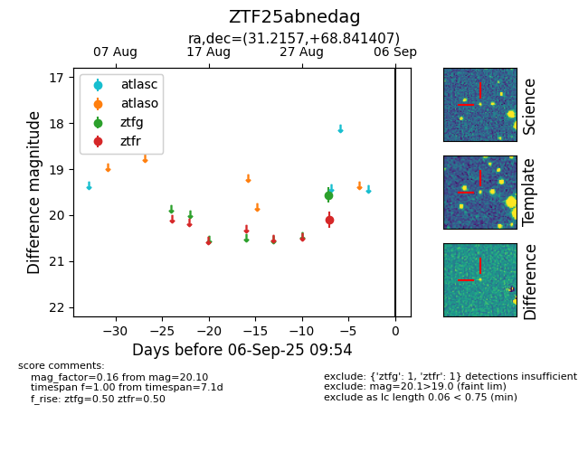

FINK: ZTF25abnedag
Lasair: ZTF25abnedag
ALeRCE: ZTF25abnedag
ZTF25abnedag (ztf,fink)
equatorial (ra, dec) = (31.2157,+68.84141)
galactic (l, b) = (129.5069,+6.91216)

last ztfg=19.56, ztfr=20.10
1 ztfg, 1 ztfr detections